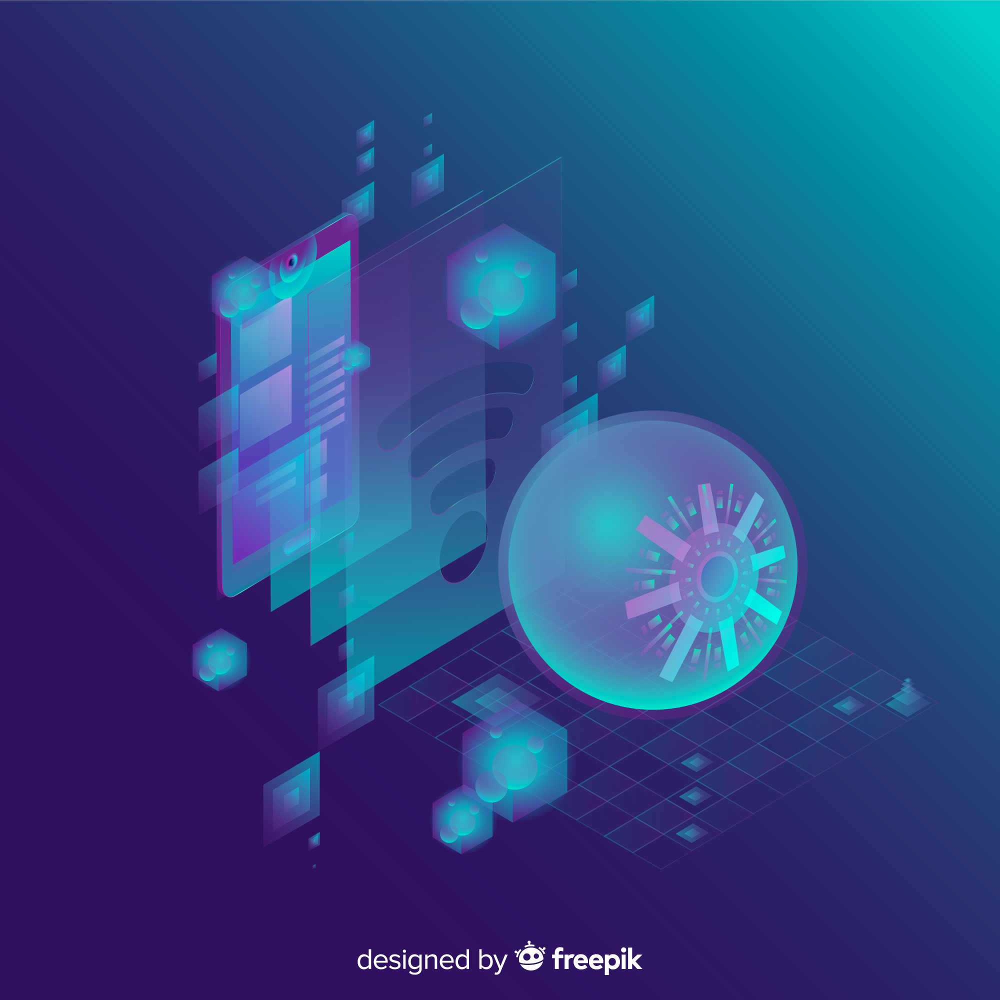
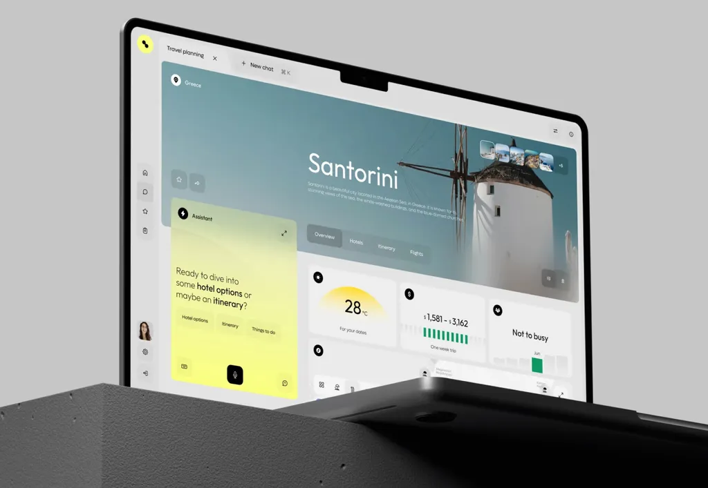
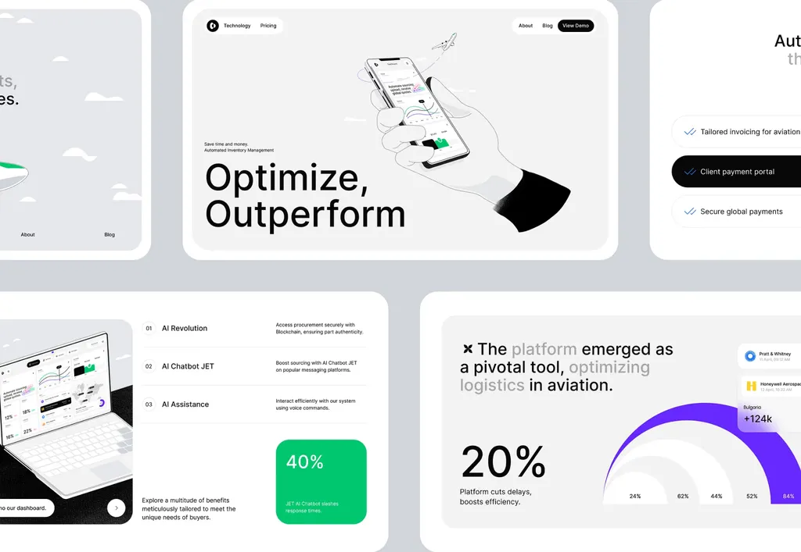

Project 1: AI Social Media Workflow System
Automated content posting, comment replies, and multi-platform workflow.
 Nazmul
Call Me
Nazmul
Call Me
Hey
I’m
I build AI agents, n8n automations, Zapier workflows, and intelligent business systems that save time and scale operations.
*Helping businesses automate operations with AI-powered workflows.

Follow me on



Work smart not harder

I help businesses save time, reduce manual work, and grow faster with smart AI automation systems.
More about meReal automation systems, AI workflows, and business solutions.
Automated content posting, comment replies, and multi-platform workflow.
Internal operations, reporting, task routing, and team workflow automation.

Custom AI agents, LLM tools, and intelligent business assistant systems.

AI learning system, course workflow, and certification-based automation.
AI tools, automation platforms, CRM workflows, and business systems.
Real words from people who trusted my automation work.
Having the expertise to set these AI agents up as fast as they did with the complexity of it. They advised on best practices and the best way to complete the system.

Delivery was fast, and the workflow saved us many hours every week. Highly recommended for anyone looking for professional automation solutions.
I was impressed by the quality of work and attention to detail. The automation setup was clean, reliable, and exactly matched my business requirements. That's awesome.
Outstanding experience from start to finish. Nazmul understood the project quickly and built a smart automation system that improved our customer support and internal workflow.

Ready to automate your business workflow? Contact me and let’s discuss your project.
Contact Me